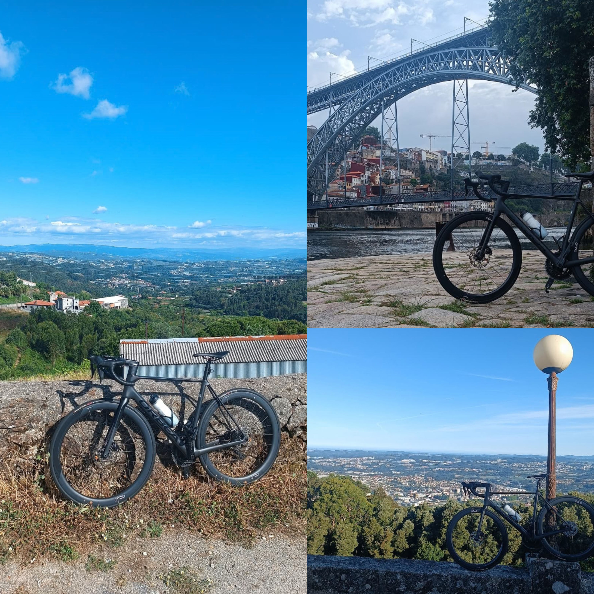
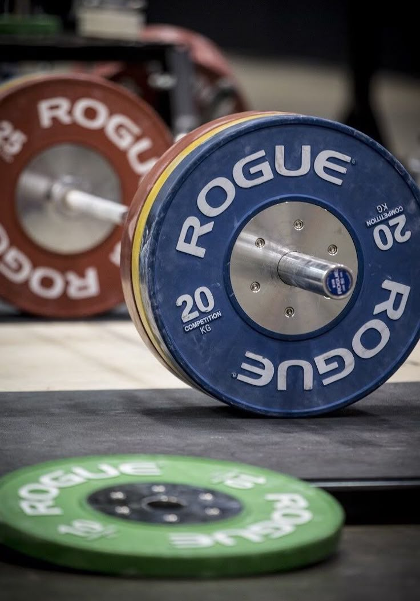
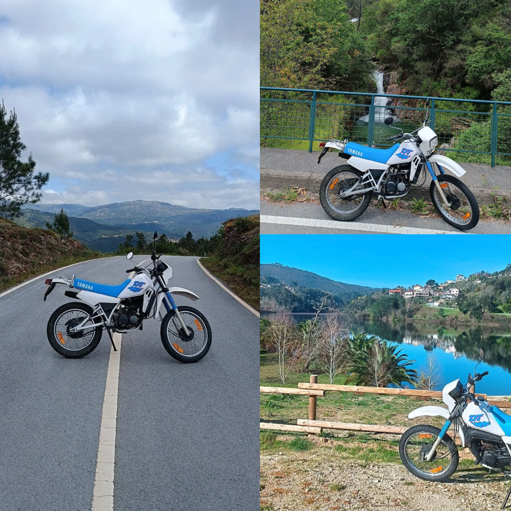

$ cat about.md
About me
I'm a student of Informatics and Computing Engineering at FEUP, University of Porto, based in Porto. I'm mostly interested in systems, computer architecture and C++. I like to understand how things work at a lower level instead of staying on the surface.
I hold a Cambridge C1 English certificate, and I'd like to spend part of my master's degree studying abroad.
Outside of university, I split my time between training (cycling and powerlifting), riding my motorcycle, building and restoring bikes, and learning acoustic guitar. I also keep a personal note-taking system in Obsidian, inspired by Zettelkasten.
$ cat hobbies/cycling.md
Cycling
I train cycling with a focus on FTP and VO2max. I also enjoy building and restoring bikes, and I'm currently putting one together from scratch using second-hand parts.
See my activity on Strava →
$ cat hobbies/powerlifting.md
Powerlifting
I train powerlifting alongside cycling, with a hybrid plan designed so the two don't get in each other's way.

$ cat hobbies/motorcycling.md
Motorcycling
I ride a DT 50 in my free time.
